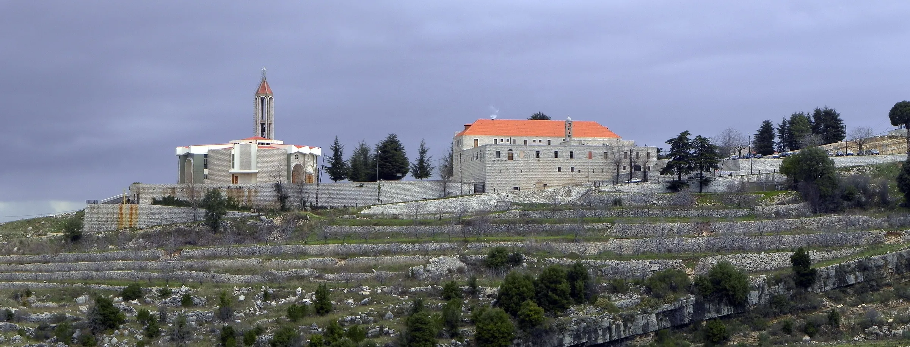
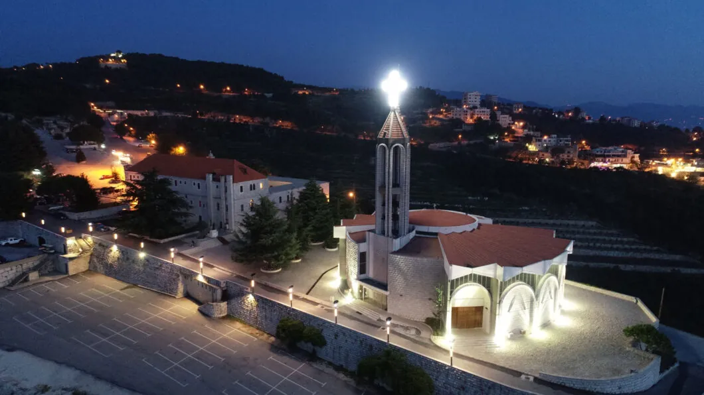
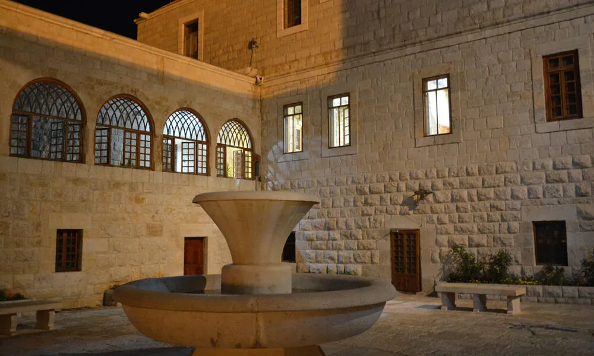
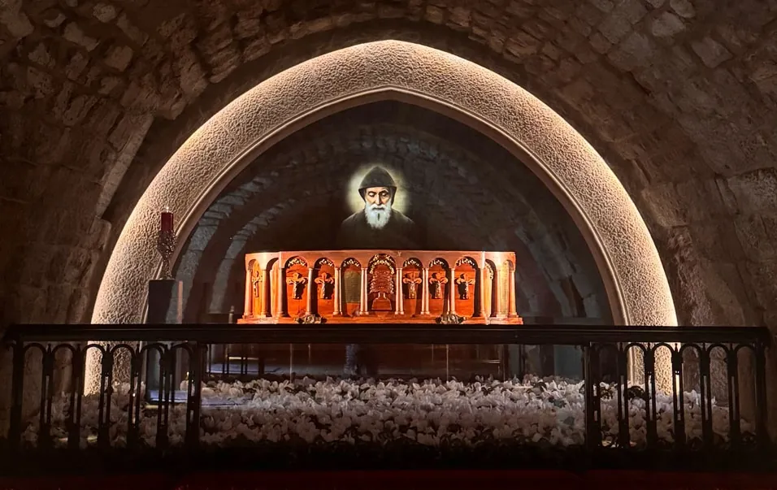
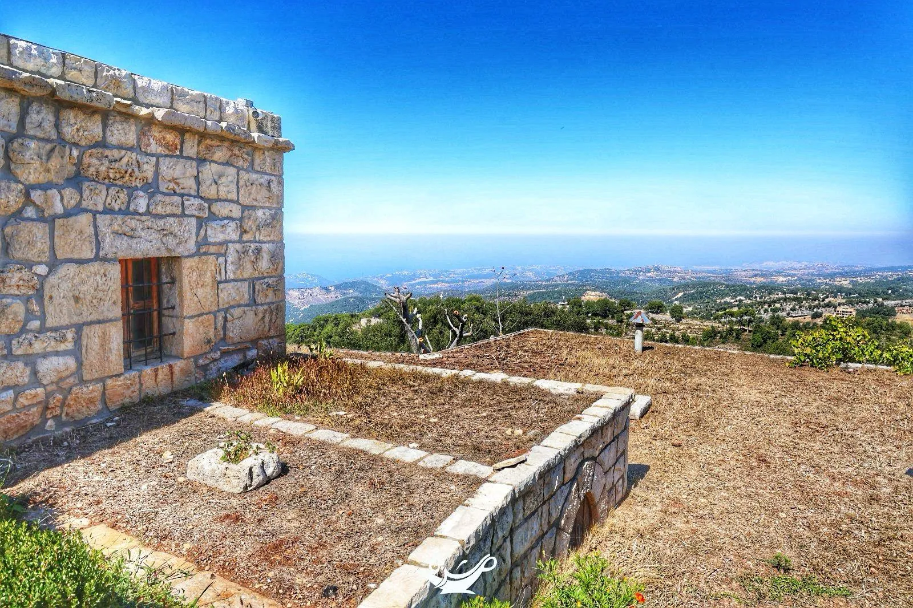

Walk Through Annaya, Online
Short answer: This is a guided walk through Annaya, the Lebanese mountain monastery where Saint Charbel lived and is buried. Scroll through five stops: the monastery, the church, the courtyard, the tomb, and the hermitage. Each has a real photograph and a short story of why it matters.
Part of the Saint Charbel Encyclopedia. Read the full story of his life or browse all topics.

The Monastery on the Mountain
Begin on the hillside. Annaya belongs to the Jbeil district, roughly 70 km north of Beirut. The monastery rests on a wooded slope near 1,200 m, and on a clear day the sea shows far below the terraces.
Why it matters: Charbel spent most of his grown life on this hill, and every stop that follows is a short walk from where you are standing.
Photo: Paul Saad, Wikimedia Commons, CC BY-SA 4.0 (cropped and resized)


The Church Built for the Pilgrims
Once Charbel was beatified in 1965, visitors came in far greater numbers than the old buildings could take. The Lebanese Maronite Order answered with a new, larger church, consecrated in 1974. His tomb lies inside it.
Why it matters: Its size tells you how many people still make the climb, especially on the 22nd of the month and at the July feast.
saintcharbel.com (Saint Charbel Oasis), used with owner permission

The Courtyard
Every pilgrim passes through this courtyard on the way in. The walls are bare stone, the windows are arched, and a fountain murmurs in the middle. Nobody pays to enter, and nobody is asked what they believe.
Why it matters: People arrive talking and leave quiet. The place works on you before you have decided to pray.
saintcharbel.com (Saint Charbel Oasis), used with owner permission

The Tomb
Here is what the climb is for. A line forms, and the people in it pray while they wait. Many hold a folded note with a name on it. When your turn comes there is nothing to perform: you kneel, you touch the stone if you wish, and you stay as long as you need.
Why it matters: For most visitors, this is the whole reason for the journey. More on the tomb page.
saintcharbel.com (Saint Charbel Oasis), used with owner permission

The Hermitage of Saints Peter and Paul
A path leads up from the monastery to the hermitage of Saints Peter and Paul. This photograph, taken from the hermitage area and published on the monastery's own hermitage page, looks out over a terrace toward the sea. Charbel moved up here in 1875. He remained for twenty-three years, until he died on Christmas Eve 1898.
Why it matters: The tomb is where people go to ask him for help. The hermitage is where he did his own praying, alone. More on the hermitage page.
saintcharbel.com (Saint Charbel Oasis), used with owner permission
Where to Go Next
Saint Charbel was born in a village far north of Annaya. Continue to Bekaa Kafra, his birthplace, or pray the nine-day novena. For travel details, hours and tips, use the Annaya visiting guide.
The Arabic guide Annaya in Arabic has the same place in Arabic.
Photo Credits
Stop 1: Paul Saad, Wikimedia Commons, CC BY-SA 4.0. Stops 2 to 5: saintcharbel.com (Saint Charbel Oasis), used with owner permission. The tour uses real photographs only.
Sources
- Charbel App: Annaya Monastery - about 1,200 meters, Jbeil district, about 70 km north of Beirut, church consecrated in 1974, the 1875 move to the hermitage
- Charbel App: Visiting Annaya - the tomb, the hermitage from 1875 until his death on Christmas Eve 1898
- Saint Charbel Oasis (the monastery's site): the Hermitage of Saints Peter and Paul